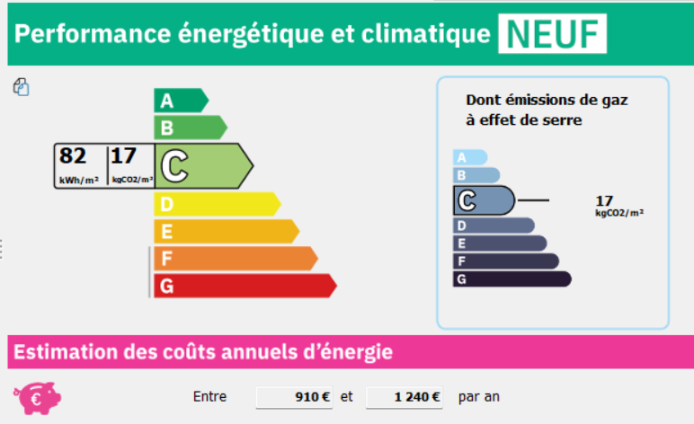

Calcul réglementaire RT2012 · Pléiades
Dimensionner et mettre en conformité thermique une maison individuelle.
Modélisation de l’enveloppe et des systèmes d’un pavillon neuf de 131,20 m² de surface thermique (SRT) sous Pléiades, de l’état initial non conforme jusqu’à la validation des exigences RT2012.
Contexte
Vérifier la conformité énergétique dès la conception
La réglementation thermique RT2012 encadre les constructions neuves autour de trois exigences principales : le besoin bioclimatique (Bbio), la consommation d’énergie primaire (Cep) et la température intérieure conventionnelle en été (Tic). Ces plafonds dépendent directement des choix d’isolation, de traitement des ponts thermiques et de dimensionnement des équipements.
À partir des plans d’une maison individuelle de 131,20 m² SRT, j’ai saisi l’ensemble du bâtiment dans Pléiades. Une première simulation a permis d’évaluer le comportement thermique de la configuration de départ et d’identifier les postes qui empêchaient d’atteindre les seuils réglementaires.
Démarche
Modéliser le bâti, comparer des variantes et ajuster les systèmes
Après la définition du zonage thermique, des parois et des liaisons dans le modeleur Pléiades, j’ai testé plusieurs évolutions sur l’enveloppe et les installations techniques afin de corriger les écarts observés lors du calcul initial.
- Saisir la géométrie, les orientations, les parois opaques et vitrées ainsi que les ponts thermiques du logement dans Pléiades.
- Analyser le bilan des déperditions de la version initiale pour cibler les modifications les plus efficaces sur le bâti.
- Mettre en place une isolation mixte combinant isolation thermique par l’intérieur et par l’extérieur (ITI/ITE), ce qui réduit le Bbio de 39 %.
- Dimensionner les systèmes de chauffage, de ventilation et d’eau chaude sanitaire avec l’intégration d’un chauffe-eau solaire individuel (CESI).
- Contrôler le confort d’été et l’ensemble des garde-fous imposés par la réglementation.
Résultats
Conformité RT2012 et étiquette énergétique simulée
L’association de l’isolation mixte ITI/ITE et du chauffe-eau solaire individuel permet de respecter les plafonds réglementaires sur l’ensemble des indicateurs. L’étiquette DPE neuf générée à l’issue de la simulation résume le classement énergétique et climatique obtenu pour le logement.
Le détail des coefficients réglementaires (Bbio, Cep, Tic), la répartition des déperditions par poste et la comparaison chiffrée entre les différentes variantes figurent dans le rapport d’étude.

Livrables
Un rapport complet de dimensionnement thermique
Le rapport rassemble les hypothèses de modélisation, le détail des parois retenues, l’analyse comparative des variantes d’isolation et les fiches récapitulatives extraites de Pléiades.